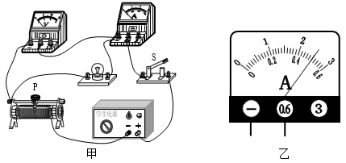
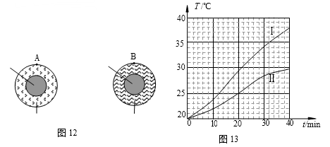
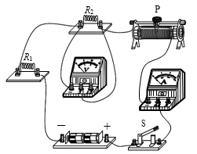
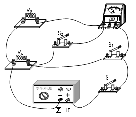
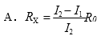
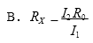
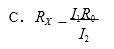
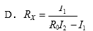

2017年北京市中考物理试题 · 选择题 第26、27、28、29、30题
26．小林想测量小灯泡的额定功率及正常发光时的电阻，小灯泡的额定电压为 2.5V，实验 电路如图 11 甲所示。实验中，当电压表示数为 2.5V 时，电流表示数如图 11 乙所示。 根据实验过程及现象，下列四个选项中，判断正确的是

A．为使小灯泡正常发光，电压表示数应为 2.5V
B．图 11 乙中的电流表示数为 2.5A
C．小灯泡正常发光时的电阻为 5Ω
D．小灯泡的额定功率为 5W
27．为了比较两种新型保温材料甲和乙的保温效果，将这两种保温材料分别做成形状、结 构、厚度完全相同的保温筒，两保温筒内同时分别放置完全相同、温度均为 80℃的恒 温源，其截面图如图 12 所示。将两保温筒放在室温为 20℃的房间内，每隔 1 0min 测 量一次两保温筒外表面 A 点和 B 点处的温度，根据记录的实验数据绘制的图像如图 13 所示，图中图像Ⅰ表示保温材料甲做成的保温筒外表面温度随时间变化的图像，图像 Ⅱ表示保温材料乙做成的保温筒外表面温度随时间变化的图像。根据实验过程及图像， 下列四个选项中，判断正确的是
0min 测 量一次两保温筒外表面 A 点和 B 点处的温度，根据记录的实验数据绘制的图像如图 13 所示，图中图像Ⅰ表示保温材料甲做成的保温筒外表面温度随时间变化的图像，图像 Ⅱ表示保温材料乙做成的保温筒外表面温度随时间变化的图像。根据实验过程及图像， 下列四个选项中，判断正确的是
A．可用单位时间内保温筒外表面的温度变化表示保温效果
B．甲材料的保温效果比乙材料的保温效果好
C．乙材料的保温效果比甲材料的保温效果好
D．如果把两保温筒内 80℃的恒温源换成-18℃的恒温源，其它条件不变，则无法比较
甲、乙两种保温材料的保温效果

28．如图 14 所示的电路中， R1、R2 均为定值电阻，实验时，干电池两端电压会随电路中 电阻的变化而改变。在不拆改电路的情况下，下列选项中的探究问题，利用这个电路进行实验能完成的是
A．电路中的电流一定时，电阻两端的电压与电阻成正比吗？
B．电阻一定时，通过电阻的电流与电阻 两端的电压成正比吗？
C．电阻两端电压一定时，通过电阻的电 流与电阻成反比吗？
D．电阻一定时，电阻消耗的电功率与电阻两端的电压的平方成正比吗？

29．下列说法中正确的是
A．探究物体所受重力大小与物体的质量的关系时，物体密度是需要控制的变量
B．探究液体内部压强大小与液体的质量的关系时，液体密度是需要控制的变量
C．探究物体所受压力大小与物体所受重力大小的关系时，物体的受力面积是需要控制
的变量
D．探究物体所受滑动摩擦力大小与物体所受重力大小的关系时，物体对接触面的压 力是需要控制的变量
30．如图 15 所示是小成测量未知电阻 Rx 的实验电路，电源两端电压不变，其中 R0 为阻值 已知的定值电阻。当开关 S、S1 闭合，开关 S2 断开时，电流表示数为 I1；当开关 S、 S2 闭合，开关 S1 断开时，电流表示数为 I2。则下列四个选项中，Rx 的表达式正确的是




